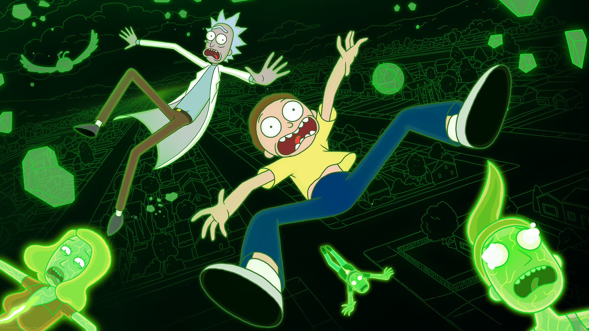

| ANIMATION/ITEMS | NAME | INFORMATION |
|---|---|---|
|  | Rick and Morty | Main Characters : Rick Sanchez/Beth Smith/Jerry Smith/Summer Smith/Morty Smith Sub Characters : Diane Sanchez/Rick Prime/Evil Morty/Jessica ... Total Episodes : 7 Seasons(each 10 episodes) Info : Rick and Morty is an American adult animated science fiction sitcom created by Justin Roiland and Dan Harmon for Cartoon Network's nighttime programming block Adult Swim. The series follows the misadventures of Rick Sanchez, a cynical mad scientist, and his good-hearted but fretful grandson Morty Smith, who split their time between domestic life and interdimensional adventures that take place across an infinite number of realities, often traveling to other planets and dimensions through portals and on Rick's flying saucer. |
| Portal Gun | First created by Rick Prime. It's device that can visit interdimensional version of theirselves. |
|
 |
Love potion | Season 1/ep.6/Rick potion #9 Morty asked Rick to make love potion to make Jessica fall in love with him. |
| Space Cruiser | The Space Cruiser is an interdisciplinary vehicle designed and built by engineer-scientist Rick Sanchez with the aim of making space travel an easier and faster task for him. |
img/info source : https://rickandmorty.fandom.com/wiki/Rickipedia